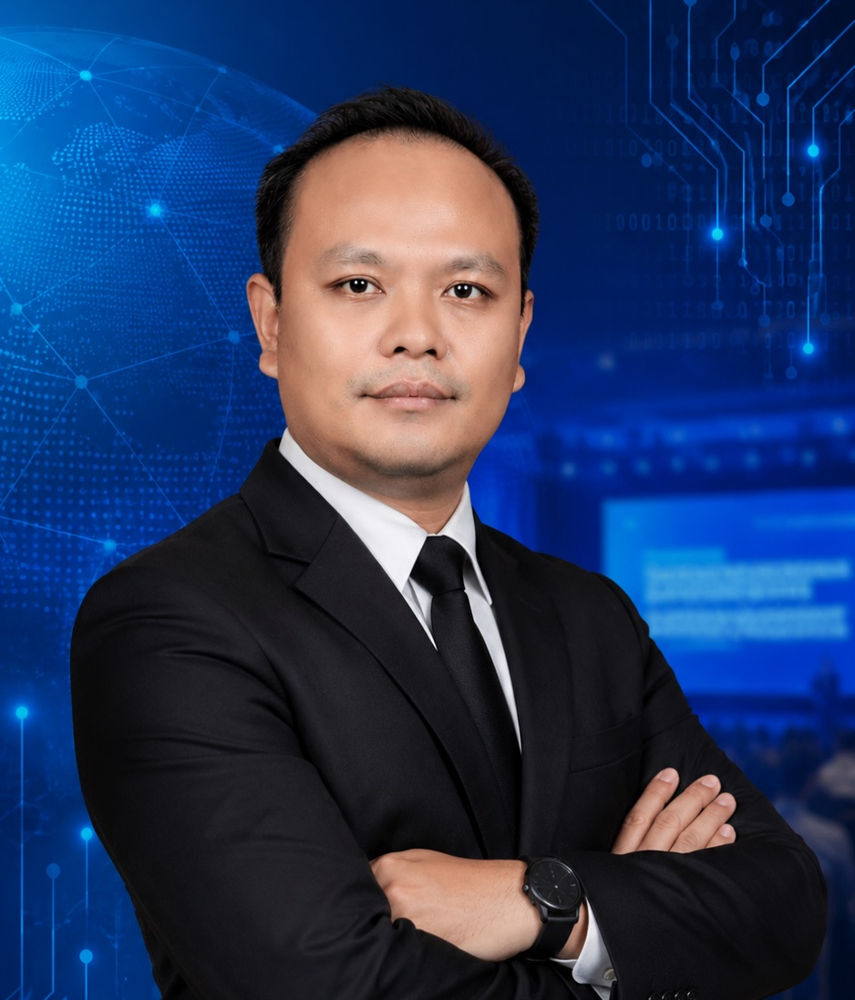

IT Infrastructure
Pengelolaan infrastruktur IT, pemeliharaan sistem, monitoring, dan kesiapan perangkat operasional.
Halo, saya
Menggabungkan teknologi, kreativitas, dan pemecahan masalah untuk membangun solusi digital yang bermanfaat.

Adi Agus Sofian,S.Kom.
IT Supervisor · 10+ Years
01 / PROFIL
Profesional IT dengan minat pada pengembangan sistem, dukungan teknologi, dan solusi digital.
Saya senang mempelajari teknologi baru, menganalisis kebutuhan, dan mengubah masalah menjadi solusi yang praktis. Saya mengutamakan komunikasi, ketelitian, dan kemauan belajar dalam setiap pekerjaan.
Berpengalaman lebih dari 10 tahun di bidang IT, terutama infrastruktur, jaringan, troubleshooting, dan sistem operasional perhotelan.
Memahami masalah sebelum menentukan solusi.
Terus belajar dan mengikuti perkembangan teknologi.
Mendukung tim melalui komunikasi dan dokumentasi yang baik.
02 / KEMAMPUAN
Kompetensi utama berdasarkan pengalaman profesional dan informasi pada CV.
Pengelolaan infrastruktur IT, pemeliharaan sistem, monitoring, dan kesiapan perangkat operasional.
Konfigurasi dan administrasi jaringan serta troubleshooting konektivitas.
Pengalaman mendukung sistem operasional hotel dan Property Management System.
Pemeliharaan komputer, sistem operasi Windows, printer, dan troubleshooting perangkat lunak.
Pembuatan materi visual menggunakan perangkat lunak desain grafis.
Koordinasi kebutuhan IT lintas departemen, dukungan teknis, dan komunikasi dengan vendor.
03 / KARYA PILIHAN
Pilihan proyek akademik dan kreatif yang relevan dengan kemampuan teknologi dan desain.
Proyek tugas akhir: konsep sistem web untuk mengotomatisasi penyusunan akta notaris menggunakan template dokumen terstruktur.
Konsep aplikasi untuk pengelolaan data kostum, transaksi sewa, stok, dan laporan.
Karya desain untuk kebutuhan promosi hotel, materi digital, dan komunikasi visual.
Catatan: lengkapi setiap kartu dengan tangkapan layar, tautan, dan detail implementasi yang dapat ditampilkan secara publik.
04 / PERJALANAN
S1 Sistem Informasi
Menempuh pendidikan Sarjana Sistem Informasi, berdasarkan informasi pada CV.
Joglo Ageng Guci Tegal Five Star Hotel & Resort
Mengelola kebutuhan infrastruktur IT pada tahap pre-opening, memastikan kesiapan jaringan, server, dan perangkat operasional, serta mendukung troubleshooting dan maintenance sistem.
PT. Trass Techno Indonesia
Mengelola operasional IT, menangani masalah hardware, software, dan jaringan, serta memonitor sistem dan perangkat.
The Sidji Hotel Pekalongan
Mengelola sistem IT hotel dan PMS, menjaga ketersediaan jaringan dan perangkat operasional, serta memberikan dukungan kepada pengguna internal.
Hotel Namira Syariah Pekalongan
Mendukung sistem IT hotel, menangani troubleshooting komputer, printer, dan jaringan, serta membantu administrasi sistem dan database.
PT. Sentra Telekomunikasi Modern Jaya · CV. Kijang Kencana · Dedy Jaya Plaza · PT. Sampoerna Telekomunikasi Indonesia · Sirandu Mall · Fast & Cheap Bandung
Berbagai peran di bidang IT, teknisi, telekomunikasi, dan operasional pada beberapa perusahaan.
05 / KONTAK
Terbuka untuk diskusi peluang kerja, proyek, dan kolaborasi di bidang teknologi.
Pemalang, Jawa Tengah · +62 823-2806-0575
Member of HITA Indonesia & HITA of Jawa Tengah